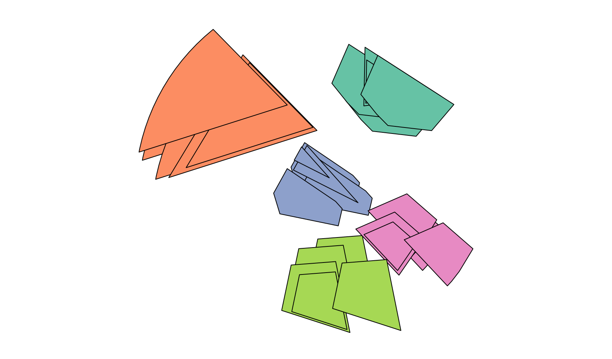
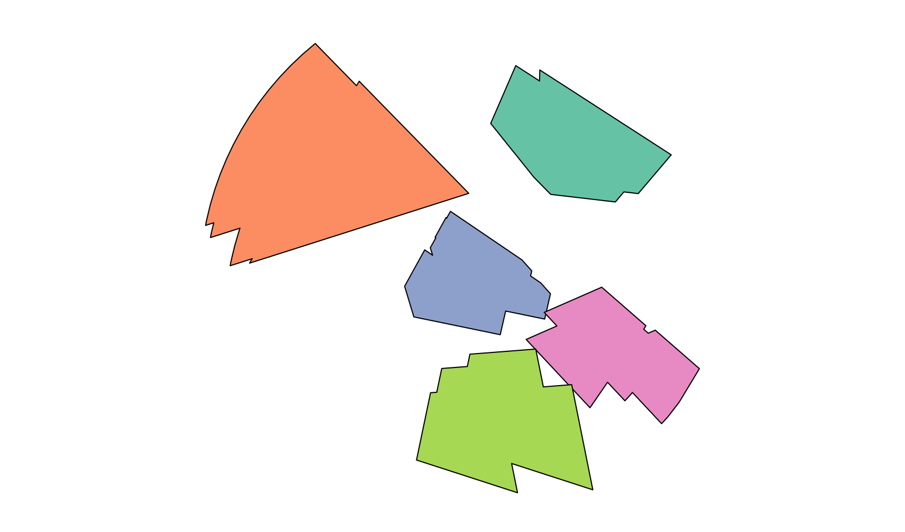
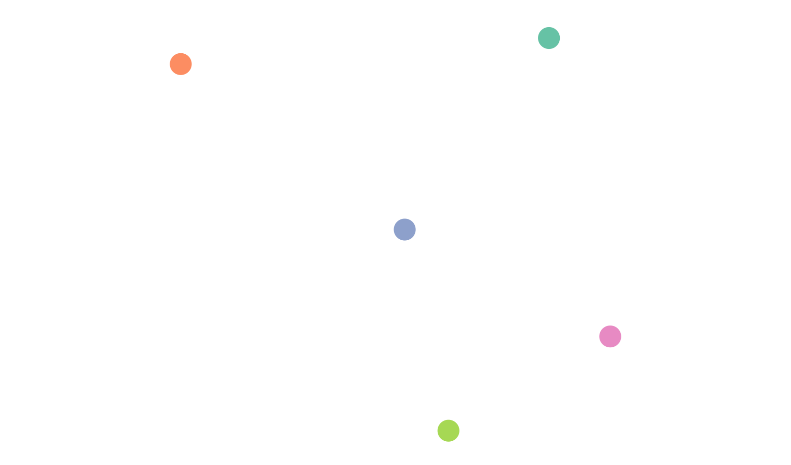
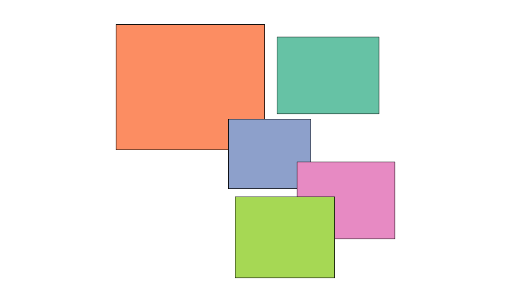
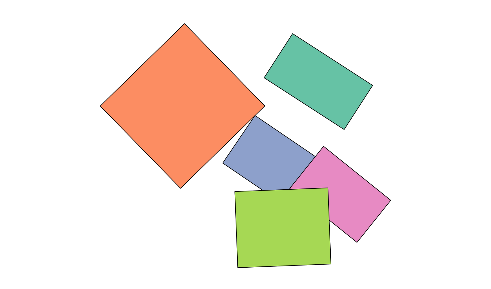
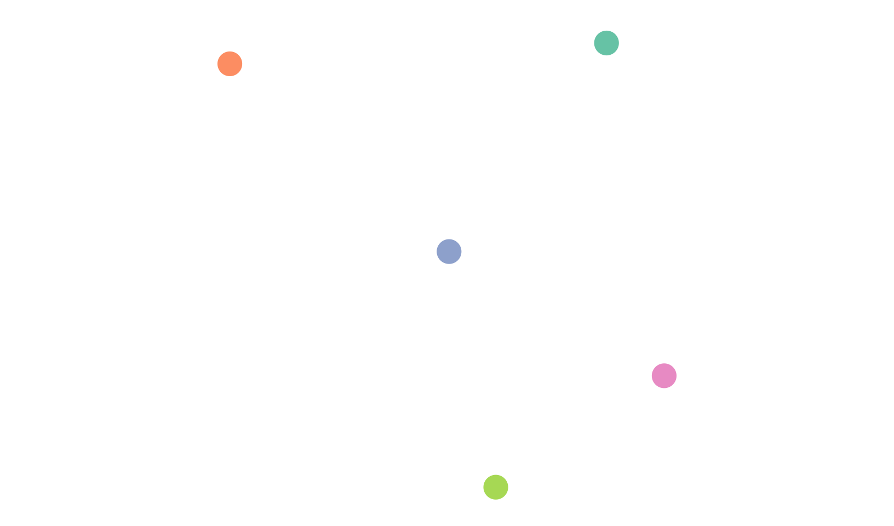

post handles changing geometries by summarising them based on a group identifier. This summary should be done for all time periods of the same features and should return a single geometry per feature, which then become the spatial dimension of post objects.
The argument to pass the summarised geometry is called geometry_summary in as_post_array() and as_post_table(). An sfc object with the summarised geometries can be directly passed here, assuming that the order of the features corresponds to an arranged group_id column (i.e. sort(unique(x$group_id))).
Helper functions
To facilitate post_* object creation the family of functions ?summarise_geometry is provided. These functions take an sf object (x) with a group identifier (group_id) and changing geometries (sf_column_name). Currently, geometries can be summarised in three ways:
- the union and dissolve of the changing geometries,
- the centroid of a
- the bounding box of a
- the minimum rotated rectangle of a
- the convex hull of a
par(mar = c(0,0,0,0))
pal = sf.colors(n = 5, categorical = TRUE)
plot(polygons["gid"], key.pos = NULL, main = NULL, reset = FALSE)
plot(summarise_geometry_union(polygons), col = pal)
plot(summarise_geometry_centroid(polygons), pch = 19, col = pal, cex = 3)
plot(summarise_geometry_bbox(polygons), col = pal)
plot(summarise_geometry_bbox(polygons, rotated = TRUE), col = pal)
#> Warning in st_minimum_rotated_rectangle.sfc(x_unioned):
#> st_minimum_rotated_rectangle does not work correctly for longitude/latitude
#> data
plot(summarise_geometry_convex_hull(polygons), col = pal)




With these functions, the summarised geometry can be created and passed on to the as_post_*() creation functions.
geoms = summarise_geometry_convex_hull(polygons)
as_post_table(polygons, geometry_summary = geoms)
#> Warning: st_centroid assumes attributes are constant over geometries
#> # cubble: key: gid [5], index: datetime, nested form, [sf]
#> # spatial: [-0.3, 0, 0.97, 1.15], WGS 84
#> # temporal: datetime [date], geometry [POLYGON [°]]
#> gid long lat geom_sum ts
#> * <chr> <dbl> <dbl> <POLYGON [°]> <lis>
#> 1 a 0.648 0.903 ((0.7568336 0.7456421, 0.8157179 0.7671687, 0.9005… <sf>
#> 2 b -0.00678 0.838 ((-0.2341393 0.5814869, -0.1843257 0.5881332, 0.37… <sf>
#> 3 c 0.394 0.538 ((0.4606164 0.4039274, 0.5749458 0.4441134, 0.5898… <sf>
#> 4 d 0.751 0.345 ((0.8757658 0.1748722, 0.8918794 0.1923982, 0.9210… <sf>
#> 5 e 0.476 0.174 ((0.505091 -0.0029756, 0.6988282 0.0046238, 0.6444… <sf>The function can also be passed directly, where summarise_geometry_centroid() is the default function.
as_post_array(polygons)
#> stars object with 2 dimensions and 1 attribute
#> attribute(s):
#> geometry
#> POLYGON :25
#> epsg:4326 : 0
#> +proj=long...: 0
#> dimension(s):
#> from to offset delta refsys point
#> geom_sum 1 5 NA NA WGS 84 TRUE
#> datetime 1 5 2020-10-01 1 days Date FALSE
#> values
#> geom_sum POINT (0.647816 0.9018588),...,POINT (0.4690683 0.17772)
#> datetime NULL
as_post_array(polygons, geometry_summary = summarise_geometry_union)
#> stars object with 2 dimensions and 1 attribute
#> attribute(s):
#> geometry
#> POLYGON :25
#> epsg:4326 : 0
#> +proj=long...: 0
#> dimension(s):
#> from to offset delta refsys point
#> geom_sum 1 5 NA NA WGS 84 FALSE
#> datetime 1 5 2020-10-01 1 days Date FALSE
#> values
#> geom_sum POLYGON ((0.4971355 0.871...,...,POLYGON ((0.2973931 0.255...
#> datetime NULLCustom summary geometry functions
A custom function to summarise geometries can also be created, given that the parameters x, group_id and sf_column_name are included in the function. Additional arguments can be passed to the function as necessary.
Here is an example of a custom summary geometry using sf::st_minimum_rotated_rectangle(). We apply the function on the unioned geometries, this is what the centroid and bounding box functions do internally.
summarise_geometry_custom = function(x, group_id = NULL,
sf_column_name = NULL) {
x_unioned = summarise_geometry_union(x,
group_id = group_id,
sf_column_name = sf_column_name)
st_point_on_surface(x_unioned)
}
custom_geoms = summarise_geometry_custom(polygons, group_id = "gid",
sf_column_name = "geometry")
#> Warning in st_point_on_surface.sfc(x_unioned): st_point_on_surface may not give
#> correct results for longitude/latitude data
par(mar = c(0,0,0,0))
plot(polygons["gid"], key.pos = NULL, main = NULL, reset = FALSE)
plot(custom_geoms, col = pal, pch = 19, cex = 3)
And we can pass it onto the creation functions as:
as_post_table(polygons, geometry_summary = custom_geoms)
#> # cubble: key: gid [5], index: datetime, nested form, [sf]
#> # spatial: [0.02, 0.17, 0.75, 0.91], WGS 84
#> # temporal: datetime [date], geometry [POLYGON [°]]
#> gid long lat geom_sum ts
#> * <chr> <dbl> <dbl> <POINT [°]> <list>
#> 1 a 0.650 0.910 (0.6498114 0.9103167) <sf [5 × 2]>
#> 2 b 0.0200 0.876 (0.0199939 0.8755516) <sf [5 × 2]>
#> 3 c 0.387 0.562 (0.3865421 0.5617063) <sf [5 × 2]>
#> 4 d 0.746 0.354 (0.7461644 0.3540933) <sf [5 × 2]>
#> 5 e 0.465 0.168 (0.4646649 0.1678673) <sf [5 × 2]>